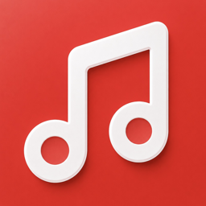
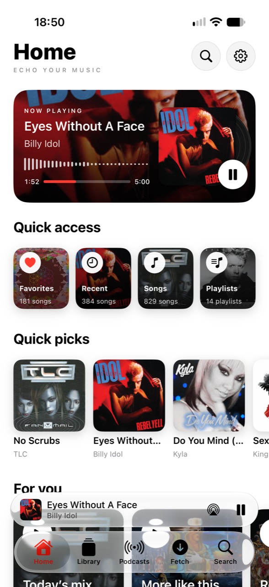

01 / YOUR COLLECTIONA library
A library
that’s all yours.
Import your music, build playlists and make your collection your own. Even without a connection.

echo. GitHubYour favorite tracks. That one podcast.
Everything you want to hear, in one place.
That’s Echo.

SOUNDS LIKE YOU
A personal home for your music and podcasts.
Thoughtful little details that make
every listen feel better.
Import your music, build playlists and make your collection your own. Even without a connection.
Follow along with synchronized lyrics, whenever they’re available.
Control playback and start your favorites straight from your Home Screen.
Discover shows, download episodes and pick up where you left off. One player for both.
Online features and lyrics depend on available sources and may require provider configuration.
READY FOR YOUR NEXT TRACK?
Echo is available as an IPA on GitHub.
Install it with SideStore and listen your way.
v1.0 · Available on GitHub
Installing with SideStore requires signing. Keep the widget extension enabled during installation.
FROM DOWNLOAD TO PLAY
Download the IPA using the button above. Check the release notes for details about this version.
Open the file in SideStore to sign and install the app. Keep the EchoWidget extension enabled.
Get SideStore ↗Import your music or discover a podcast. Start playback once, then add your favorite widget.
HELP SHAPE ECHO
Follow development on GitHub. Report a bug, suggest a feature or explore the Swift code. Your feedback helps Echo grow.
Echo is built for iPhone and iPad running iOS or iPadOS 26.0 or later.
Download Echo.ipa using the download button and install it with SideStore. Signing is required. Keep the widget extension enabled. Newer development builds are available from the GitHub build workflow; downloading build artifacts may require a GitHub account.
Yes. Imported music and downloaded podcast episodes can be played offline. New searches, streams and online content require an internet connection.
Spotify lets you browse its catalog and transfer playlists. Echo reuses matching tracks in your library and queues missing ones in Fetch. Spotify provides playlist information; audio comes from the sources you configure for Fetch.
Local playback works with your imported files. Some online features require additional setup or provider credentials. Lyrics and podcast transcripts depend on available sources. See the service configuration on GitHub for details.
On GitHub, choose Watch → Custom → Releases to receive notifications about new versions. This requires a GitHub account. This website also checks for a newer IPA release each time you open it.
PRESS PLAY. FEEL AT HOME.